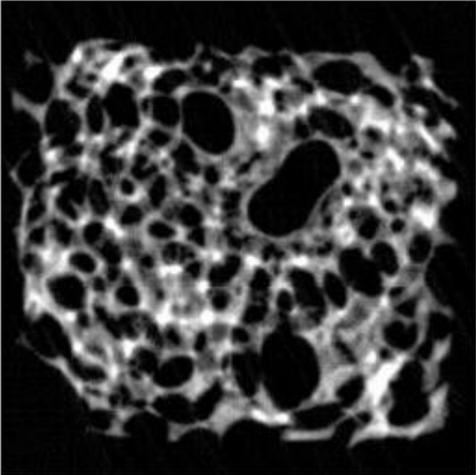
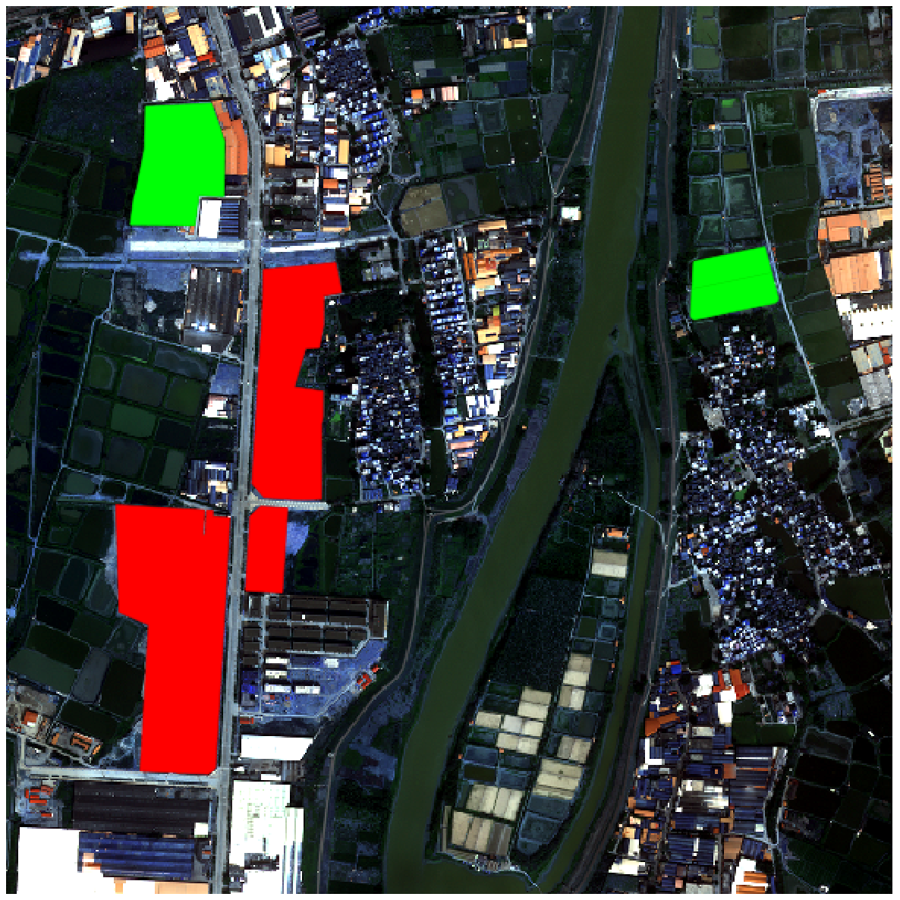
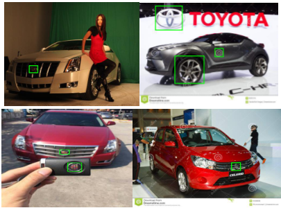
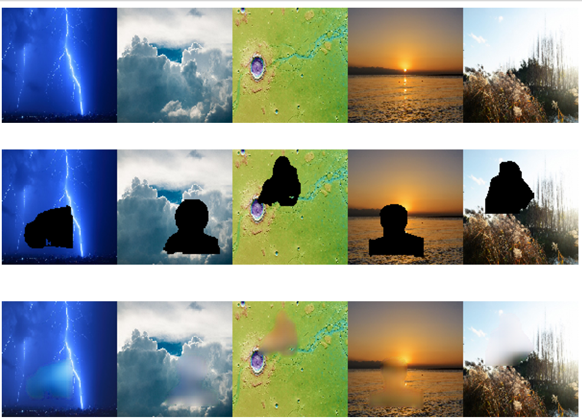
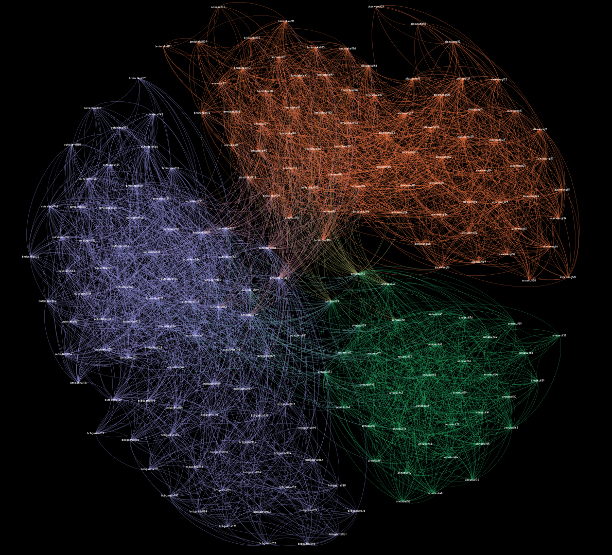
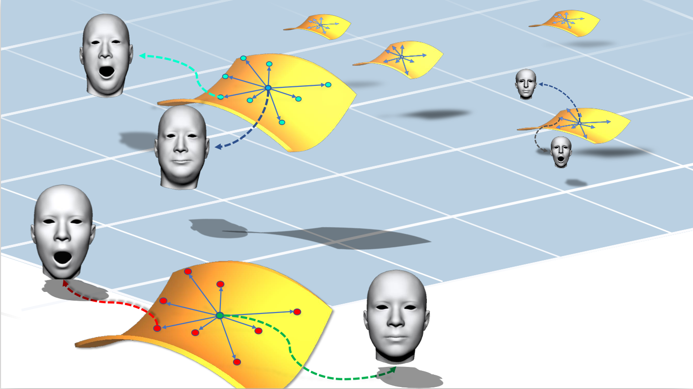
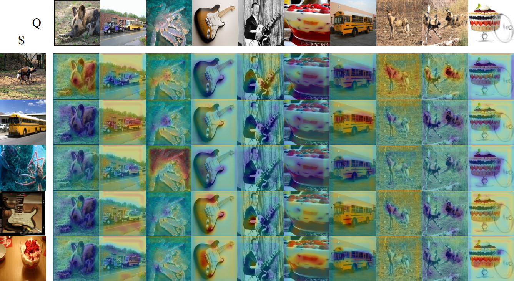
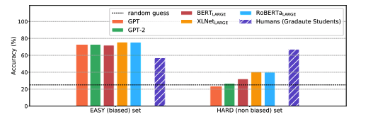
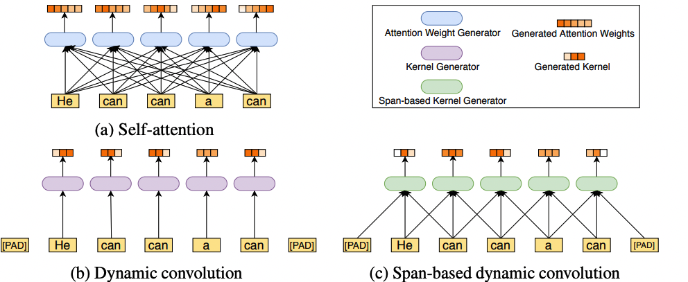

First prize in Contemporary Undergraduate Mathematical Contest in Modeling,here is paper link

First time to use real world data 广东政务数据创新大赛—智能算法赛

try more and harder 基于合成数据的Logo识别,here is paper link
Face Replacement: Using CycleGAN to replace face in video
Hardware project supervised by Prof. Dr. Ligang Liu,here is the video link

GAN-like project supervised by Prof. Juyong Zhang,here is the project link

Community detection project supervised by Prof.Leong Hon Wai,here is the project link

Our paper is accepted by CVPR 2019. Thanks to Qian-yi, Keyu and Prof. Juyong Zhang.

FYP done at NUS LV-lab . The work introduce a spatial adaptive attention mechanism to the few shot setting

Our paper is accepted by ICLR 2020. We release a Reading Comprehension Dataset which requires the ability to do logical reasoning.

Our paper is accepted by NeurIPS 2020. We introduce a span-based convolution operator and some other technique to improve the BERT model.
GTM164 ANT the Classical Bases, GTM165 ANT the Inverse Problem and the Geometry of Sumset, OpenCV-Python Tutorial, Differential Geometry of Curves and Surfaces
See more on my github
Chinese Name 蒋子航 (Zihang Jiang)
English Name Fred Jiang
Hometown Yueqing ,Zhejiang, China
School NUS
Status Ph.D.
Github zihangJiang
current CV download